الفصول 1–11 لكل الصيادلة. الفصل 12 للمسؤولين والمدراء، والفصل 13 لمدير النظام.
1مقدمة: ما هو التطبيق ومن يستخدمه
تطبيق وحدة الصيدلة السريرية هو النسخة الإلكترونية من الجارت الورقي الذي يُملأ لكل ردهة يوميًا في جولة الجرعات الصباحية. يكتب الصيدلي المرضى والأدوية والكميات على شاشة تشبه الجارت الورقي تمامًا، فيُحفظ كل شيء تلقائيًا، ويُطبع الجارت بورقة A4 بالشكل المعتاد. ومن الجارت نفسه تُبنى استمارة الحبوب والطلبية واستمارات الميرونيم والالبومين ومتابعة المضادات الحيوية، فلا يُكتب الشيء نفسه مرتين.
يعمل التطبيق من المتصفح على الآيباد وتابلت الأندرويد والهاتف والحاسوب، وباللغة العربية كاملًا. ويستمر العمل حتى إذا ضعفت الشبكة في الردهة (الفصل 11).
الأدوار في النظام
الدور
من هو
ماذا يرى ويفعل
مستخدم
صيدلي الردهة
يرى الطابق (أو الردهات المستقلة) المخصّص له فقط، ويعمل على جارتاته واستماراته.
مسؤول
مسؤول الوحدة / المشرف
يرى كل الطوابق والردهات، ولوحة التحكم، والتقارير، ويكتب إعلانات الإدارة، ويدير الأدوية والمستخدمين.
مدير
مدير النظام
كل ما سبق، إضافةً إلى قبول طلبات الانضمام، وسجل الإدارة، وسجل الأخطاء.
مصطلحات تتكرر في الدليل
الجارت
جدول الجرعات اليومي للردهة: صف لكل مريض (حتى 41 مريضًا) وعمود لكل دواء.
الجارت الإضافي
جارت ثانٍ للردهة في اليوم نفسه، يُملأ بعد الجارت الرئيسي.
الحبوب
استمارة إعطاء الحبوب: أوقات الجرعات وطريقة الاستعمال لكل مريض.
الطلبية
مجموع كل دواء في جارت اليوم، بالأرقام وبالحروف، لطلبه من الصيدلية.
رقم الطبلة
رقم المريض في المستشفى (أرقام فقط). يربط المريض بين الأيام والردهات.
الطابق / الردهة
الطوابق 2–6 و8 و9 و10، ولكل طابق ردهتان أو ثلاث، إضافةً إلى الردهات المستقلة.
بدأت / لم تبدأ / اكتملت
حالة جارت الردهة اليوم كما تظهر للمسؤولين.
2البدء: إنشاء حساب وتسجيل الدخول
إنشاء حساب جديد
افتح رابط التطبيق، ثم اضغط إنشاء حساب أسفل نموذج الدخول.
اكتب الاسم الكامل واسم المستخدم والبريد الإلكتروني ورقم الهاتف ورقم البصمة وكلمة المرور.
اضغط زر الإرسال. يصل طلبك إلى المدير في طلبات الانضمام.
بعد أن يوافق المدير ويحدّد طابقك، تستطيع الدخول.
نصيحة: اختر اسم مستخدم بالأحرف الإنجليزية يسهل تذكّره، واحفظ كلمة المرور. لكل صيدلي حسابه الخاص.
تسجيل الدخول
اكتب اسم المستخدم وكلمة المرور.
اضغط تسجيل الدخول. تظهر صفحة طابقك مباشرة.
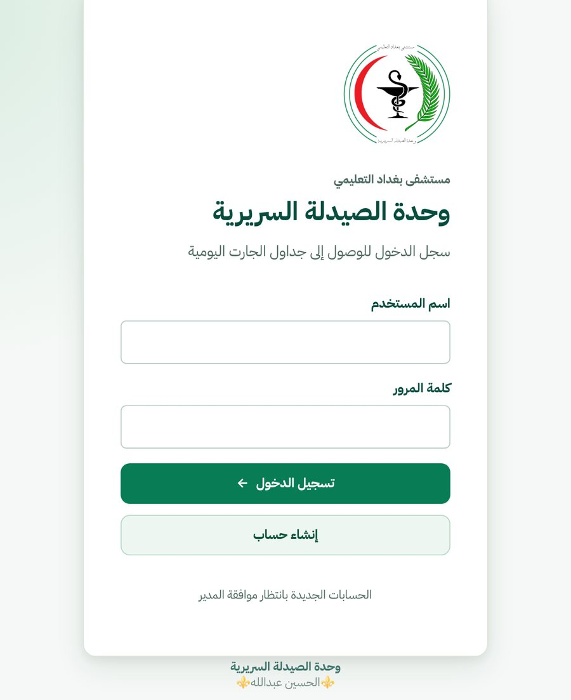
شاشة تسجيل الدخول.
مهم: لا تتشارك حسابًا واحدًا مع زميل. إذا فتح شخصان الحساب نفسه على جهازين، فكلاهما يُعتبر «صاحب» الجارت ويستطيع تعديله في الوقت نفسه، فتُدمج تعديلاتهما معًا. الحسابات المنفصلة تمنع ذلك، وتجعل «سجل التعديلات» يُظهر من كتب ماذا.
إضافة التطبيق إلى الشاشة الرئيسية
ليعمل التطبيق مثل أي تطبيق على الجهاز، بأيقونة خاصة وبدون شريط المتصفح:
آيباد / آيفون (Safari): زر المشاركة ⬆️ ← إضافة إلى الشاشة الرئيسية.
أندرويد (Chrome): قائمة النقاط الثلاث ⋮ ← تثبيت التطبيق أو إضافة إلى الشاشة الرئيسية.
التحديثات وانتهاء الجلسة
التحديثات: يحدّث التطبيق نفسه تلقائيًا. إذا أُبلغت بميزة جديدة ولم تظهر، فأغلق التطبيق تمامًا وافتحه من جديد.
انتهاء الجلسة: بعد فترة من عدم الاستخدام قد تظهر بطاقة انتهت الجلسة. أدخل كلمة المرور واضغط متابعة العمل. ما كتبته قبل ذلك لا يضيع، ويُحفظ بعد الدخول.
الأجهزة المشتركة: في نهاية مناوبتك اضغط تسجيل الخروج حتى لا يعمل غيرك باسمك.
3الشاشة الرئيسية وصفحة الطابق
بعد الدخول تظهر صفحة طابقك: تاريخ اليوم، وبطاقة لكل ردهة، وإعلانات الإدارة في الأسفل.
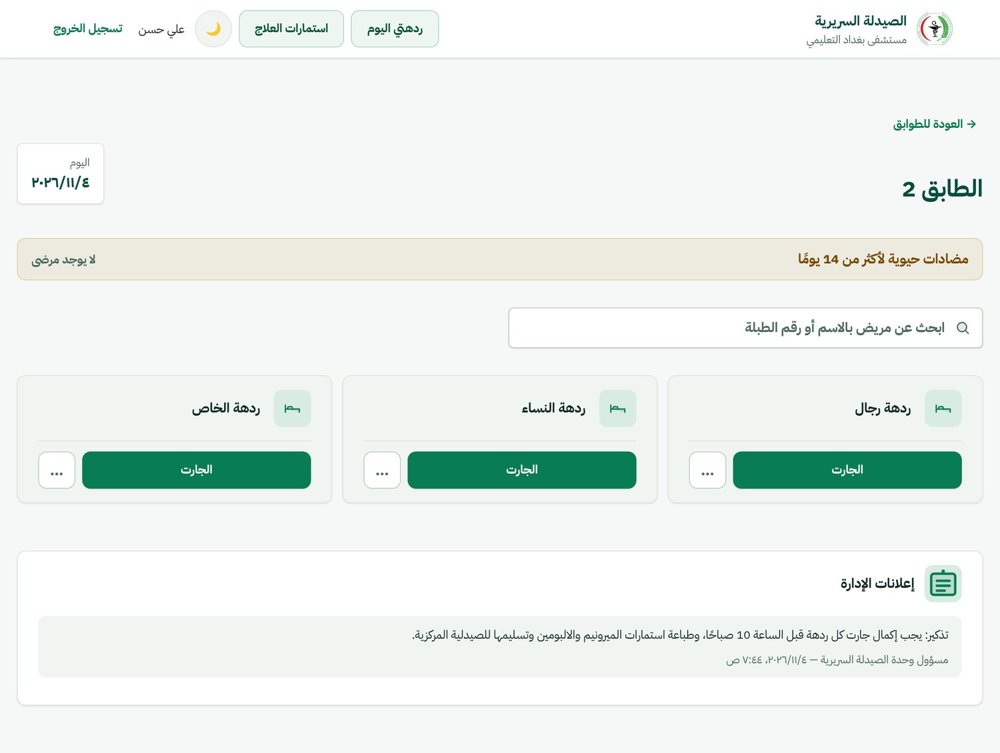
صفحة الطابق لصيدلي الطابق الثاني: البحث، بطاقات الردهات، وإعلانات الإدارة.
الشريط العلوي
الشعار
يعيدك إلى الصفحة الرئيسية من أي مكان.
ردهتي اليوم
يفتح صفحة طابقك مباشرة.
استمارات العلاج
مكتبة الاستمارات والملفات التي يرفعها المسؤولون، للقراءة والتنزيل.
🌙
الوضع الليلي / النهاري.
اسمك
يفتح الملف الشخصي (الفصل 14).
تسجيل الخروج
للخروج من الحساب.
بطاقة الردهة
في كل بطاقة زر الجارت الأخضر الكبير، وهو العمل اليومي الأساسي. وبجانبه زر … الذي يفتح قائمة بكل ما يخص الردهة، في مجموعتين:
الشريط الأصفر أعلى الصفحة يذكر كل مريض في طابقك ما زال على مضاد حيوي منذ أكثر من 14 يومًا. إذا لم يوجد أحد يظهر لا يوجد مرضى.
البحث عن مريض
اكتب اسم المريض أو رقم الطبلة في مربع ابحث عن مريض بالاسم أو رقم الطبلة. تظهر النتائج من جارتات اليوم (الرئيسي والإضافي) في طابقك، ولكل نتيجة الردهة والصف وأدوية ذلك اليوم. اضغط النتيجة لفتح الجارت على صف المريض.
نصيحة: المسؤولون يبحثون في كل الوحدة من صفحة الطوابق، ويستطيعون البحث في كل التواريخ.
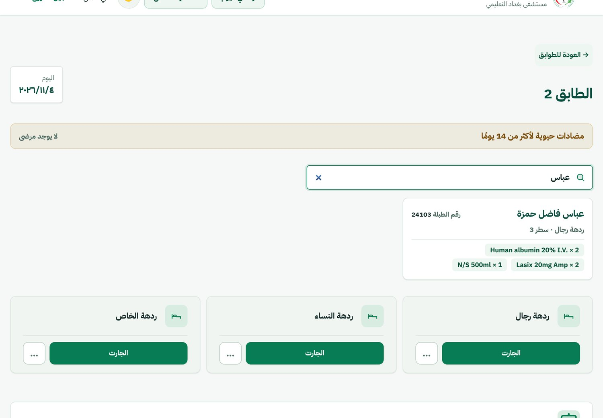
نتيجة بحث عن «عباس».
على الهاتف
على الهاتف يظهر شريط سفلي فيه الرئيسية وردهتي وحسابي، ويظهر للمسؤولين أيضًا التقارير والإدارة. وتصبح أزرار الشريط العلوي أيقونات.
كل الشاشات تعمل على الهاتف، لكن الجارت الكامل أريح على الآيباد. للإضافة السريعة من الهاتف استعمل إدخال مريض (الفصل 5).
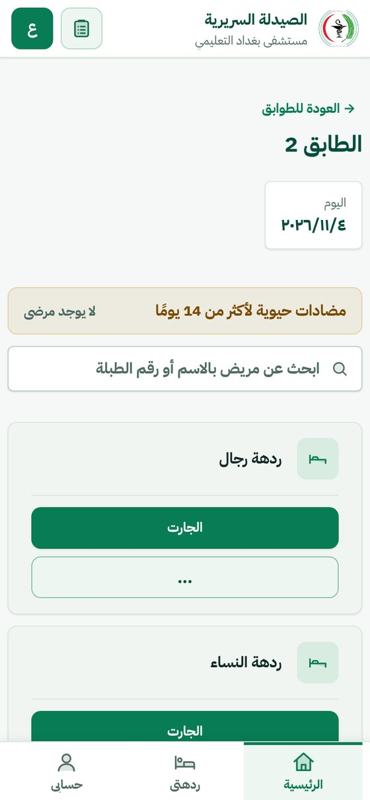
صفحة الطابق على الهاتف.
4الجارت اليومي
اضغط الجارت في بطاقة الردهة. يفتح جارت اليوم: المرضى في الصفوف من اليمين، والأدوية في رؤوس الأعمدة، والكميات في الخلايا. كل ما تكتبه يُحفظ تلقائيًا خلال ثانية تقريبًا.
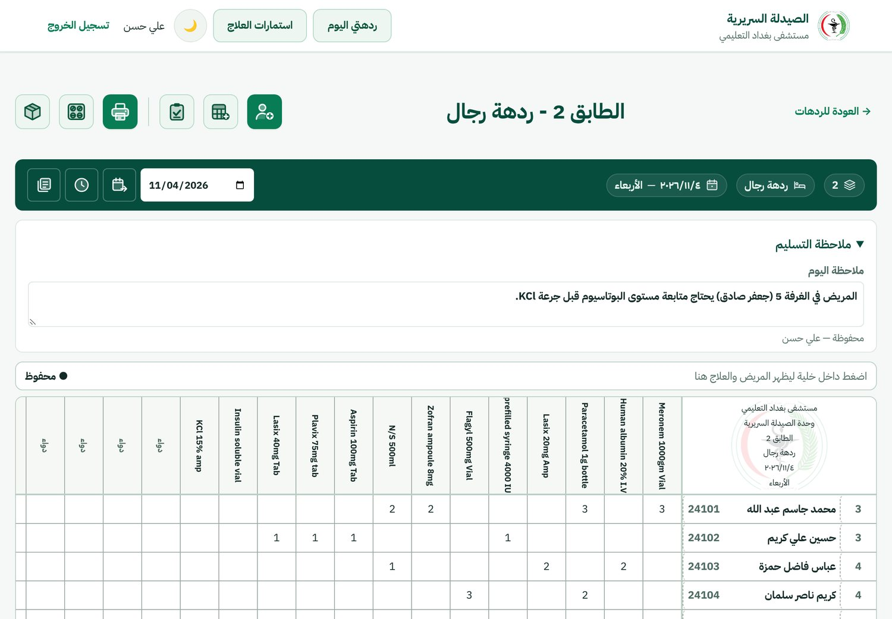
جارت ردهة رجال: أزرار الأدوات، الشريط الأخضر الداكن، ملاحظة التسليم، ثم الجدول.
أزرار أعلى الجارت
الزر
الاسم
ماذا يفعل
إدخال مريض
نموذج سهل لإضافة مريض واحد بأدويته (الفصل 5).
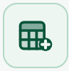
إضافة عمود
يضيف عمود دواء جديد في آخر الجدول.
اكتمل الجارت
تعلّم به أنك انتهيت من جارت اليوم. يظهر اسمك على الجارت، وتتحول حالة الردهة عند المسؤولين إلى «اكتملت». اضغطه مرة أخرى للإلغاء.
طباعة A4 / PDF
يصنع ملف PDF للجارت بورقة A4 أفقية، ويفتحه للطباعة أو المشاركة.
استمارة الحبوب
ينتقل إلى استمارة الحبوب لهذه الردهة (الفصل 7).
الطلبية
ينتقل إلى طلبية اليوم (الفصل 8).
وفي الشريط الأخضر الداكن: الطابق والردهة وتاريخ اليوم، ثم حقل التاريخ لفتح جارت يوم آخر، وثلاثة أزرار صغيرة: نسخ الأدوية إلى اليوم التالي، و سجل التعديلات، و القوالب.
اليوم فقط: لا يُكتب إلا في جارت اليوم. إذا اخترت تاريخًا آخر (أمس أو غدًا) يُفتح الجارت للعرض والطباعة فقط، ويظهر فوقه «جارت … — للعرض فقط». وكذلك استمارة الحبوب واستمارات الميرونيم والالبومين ومتابعة الاستلام وملاحظة التسليم. المسؤول والمدير وحدهما يستطيعان تصحيح يوم سابق.
كتابة المرضى
في أقصى يمين الصف اكتب رقم الغرفة، ثم اسم المريض، ثم رقم الطبلة (أرقام فقط).
إذا كتبت اسمًا أو رقم طبلة لمريض كان على جارت الأمس، يعرض التطبيق نقله كما هو: الاسم والرقم والأدوية والكميات. وافِق إذا كان المريض نفسه.
لحذف مريض اضغط ✕ بجانب اسمه. ترتفع الصفوف التي تحته صفًّا واحدًا، ومعها أرقام غرفها.
إضافة الأدوية
اضغط رأس عمود فارغ (مكتوب فيه «دواء») وابدأ بكتابة اسم الدواء.
تظهر قائمة اقتراحات من قائمة أدوية الوحدة. اختر الاسم الصحيح.
لا يُقبل إلا دواء موجود في القائمة. إذا كتبت اسمًا قريبًا يسألك التطبيق هل تقصد «…»؟. وإذا لم يكن الدواء موجودًا أصلًا، اطلب من المسؤول إضافته من إدارة الأدوية.
كتابة الكميات
اضغط الخلية التي تقاطع المريض والدواء واكتب العدد. يمكنك التنقل بين الخلايا بأسهم لوحة المفاتيح.
الشريط الأبيض فوق الجدول يذكر المريض والعلاج للخلية التي تقف عليها، حتى لا تكتب في صف خاطئ. وفي طرفه حالة الحفظ:
محفوظ: كل شيء وصل إلى الخادم.
جارٍ الحفظ…: يُرسل الآن.
رسالة خطأ مع زرإعادة المحاولة الآن: لم يصل الحفظ. يعيد التطبيق المحاولة وحده كل بضع ثوانٍ، وتستطيع الضغط للمحاولة فورًا.
عمود السرنجات (إن وُجد) يُحسب تلقائيًا من مجموع الفيالات والأمبولات في الصف، ويمكنك تعديله يدويًا.
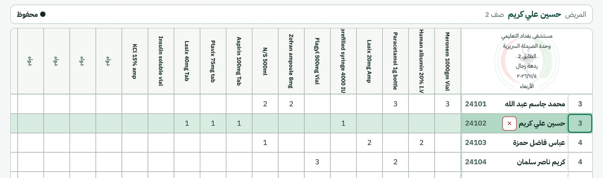
الصف المحدّد مظلل، واسم المريض «حسين علي كريم» في الشريط فوق الجدول.
ملاحظة التسليم
مربع ملاحظة التسليم أعلى الجارت لما يحتاج الصيدلي التالي معرفته عن الردهة. اكتب ملاحظتك ثم اخرج من المربع لتُحفظ. وتظهر ملاحظة اليوم السابق فوقها إن وجدت.
نسخ الأدوية إلى اليوم التالي
الزر نسخ الأدوية إلى اليوم التالي ينسخ أسماء أعمدة الأدوية فقط إلى جارت الغد. لا يُنسخ المرضى ولا الكميات.
انتبه: إذا كان في جارت الغد مرضى، تقول رسالة التأكيد إنه سيُستبدل بالكامل. اضغط إلغاء إن لم تكن متأكدًا.
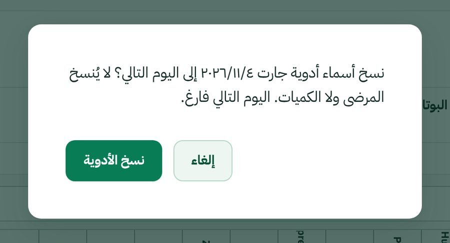
تأكيد نسخ الأدوية.
قوالب الأدوية
القالب ترتيب محفوظ لأعمدة الأدوية تطبّقه على أي جارت بضغطة واحدة. القوالب خاصة بك ولا يراها غيرك.
لحفظ قالب: رتّب أعمدة الجارت، ثم افتح القوالب، واكتب اسمًا في حفظ أدوية هذا الجارت كقالب، واضغط حفظ.
لتطبيقه: افتح القوالب في جارت لم تُكتب فيه كميات بعد، واضغط تطبيق. تُستبدل الأعمدة بأعمدة القالب، ويمكنك تراجع فورًا.
انتبه: لا يُطبّق القالب بعد إدخال الكميات، لأنه يستبدل أعمدة الأدوية كلها.
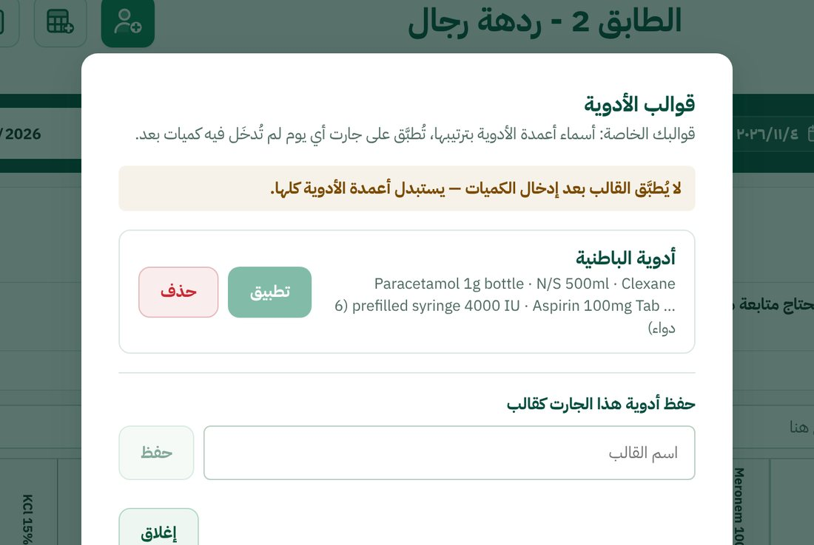
نافذة القوالب.
سجل التعديلات
سجل التعديلات يعرض آخر 30 عملية حفظ غيّرت شيئًا في الجارت: من حفظها، ومتى، وما الذي تغيّر (القيمة السابقة ← الجديدة). استعمله لمعرفة من عدّل خلية، أو لإعادة قيمة حُذفت بالخطأ.
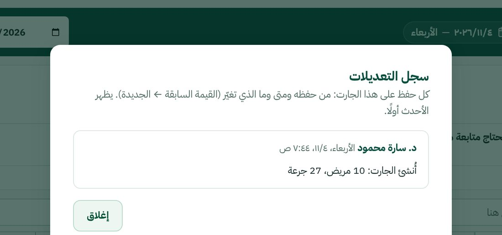
سجل التعديلات.
طباعة الجارت
اضغط طباعة A4 / PDF. يظهر جارٍ التحضير… لثوانٍ، ثم يفتح ملف PDF في عارض الجهاز. اطبعه من زر الطباعة أو المشاركة فيه. الورقة واحدة على كل الأجهزة، وفيها شعار المستشفى والطابق والردهة والتاريخ.
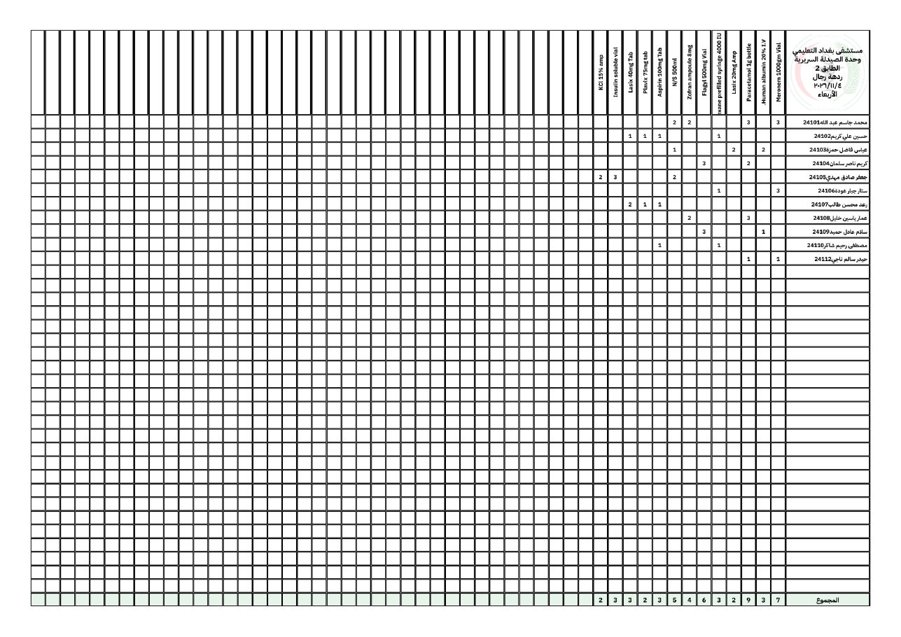
الجارت المطبوع (A4 أفقي).
تنبيهات قد تراها في الجارت
⚠ بجانب اسم المريض
تداخل دوائي مهم أو دواء مكرر في أدوية هذا المريض. اضغط ⚠ لرؤية التفاصيل، ومنها إلى شاشة التداخلات الدوائية.
جارت … — للعرض فقط
الجارت المفتوح ليس جارت اليوم، فلا يمكن الكتابة فيه. ارجع إلى تاريخ اليوم. (المسؤول والمدير يرون بدلًا منه «⚠ جارت … — ليس اليوم» ويستطيعون التعديل.)
⚠ رقم الطبلة … مسجّل اليوم أيضًا في …
رقم الطبلة نفسه موجود اليوم في ردهة أخرى: نقل لم يُسجَّل، أو رقم مكتوب خطأ.
أنت تُحرّر
أنت من يعدّل هذا الجارت الآن.
الجارت للقراءة فقط
زميل آخر يعدّل هذا الجارت على جهاز آخر. تظهر تعديلاته أمامك مباشرة، ويُفتح لك التعديل حين ينتهي.
اختفت بيانات الجارت فجأة…
حماية: إذا فرغ الجدول كله دفعة واحدة لا يُحفظ فارغًا، وتعود آخر نسخة محفوظة. راجِع الجارت.
5إدخال مريض (استمارة)
نموذج لإضافة مريض واحد بسرعة، مصمّم للهاتف. افتحه بزر إدخال مريض في الجارت، أو من قائمة «…» ← إدخال مريض (استمارة).
اختر الجارت أو الجارت الإضافي في الأعلى.
اكتب اسم المريض ورقم الغرفة ورقم الطبلة. إذا كان المريض على جارت الأمس يُعرض عليك نقل أدويته.
في الأدوية علّم الأدوية التي يأخذها المريض من أدوية هذا الجارت، وعدّل الكمية بـ + و−.
لدواء غير موجود في الجارت، ابحث عنه في الأسفل. يُضاف له عمود جديد.
اضغط إضافة إلى الجارت. يُكتب المريض في أول صف فارغ.
يذكر النموذج عدد المرضى في الجارت (مثل 10 من 41)، وينبّهك حين يقترب الجارت من الامتلاء.
نصيحة: إذا أضفت ميرونيم أو البومين يظهر طلب استمارته مباشرة (الفصل 9).
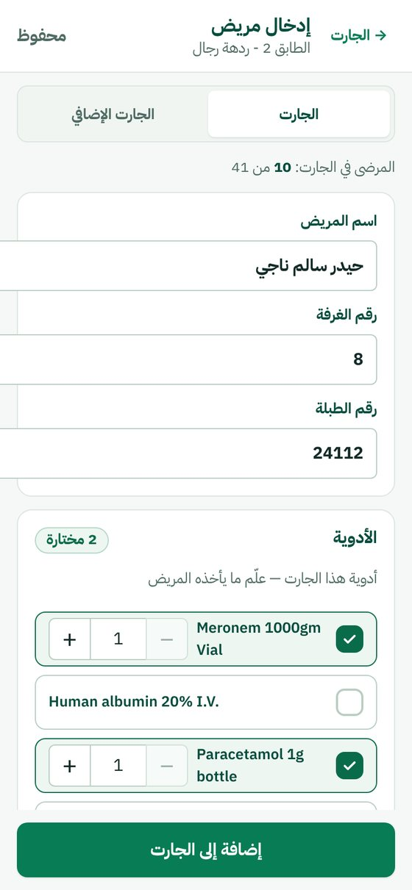
إدخال مريض على الهاتف.
6الجارت الإضافي
الجارت الإضافي جارت ثانٍ للردهة في اليوم نفسه، للمرضى والأدوية التي تأتي بعد إكمال الجارت الرئيسي. افتحه من قائمة «…» ← الجارت الإضافي، أو اختره في أعلى إدخال مريض.
يعمل تمامًا مثل الجارت الرئيسي (الكتابة والحفظ والطباعة والقوالب)، ويظهر فوقه شريط جارت إضافي البرتقالي حتى لا يُخلط بالرئيسي.
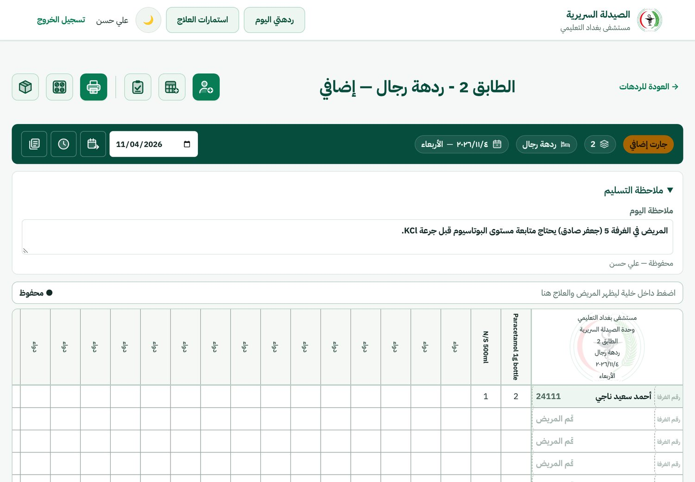
الجارت الإضافي لردهة رجال.
7استمارة الحبوب
تُبنى استمارة إعطاء الحبوب تلقائيًا من الجارت: لكل مريض بطاقة فيها الحبوب والكبسولات الموجودة في صفّه. افتحها من قائمة «…» ← الحبوب، أو بزر استمارة الحبوب في الجارت.
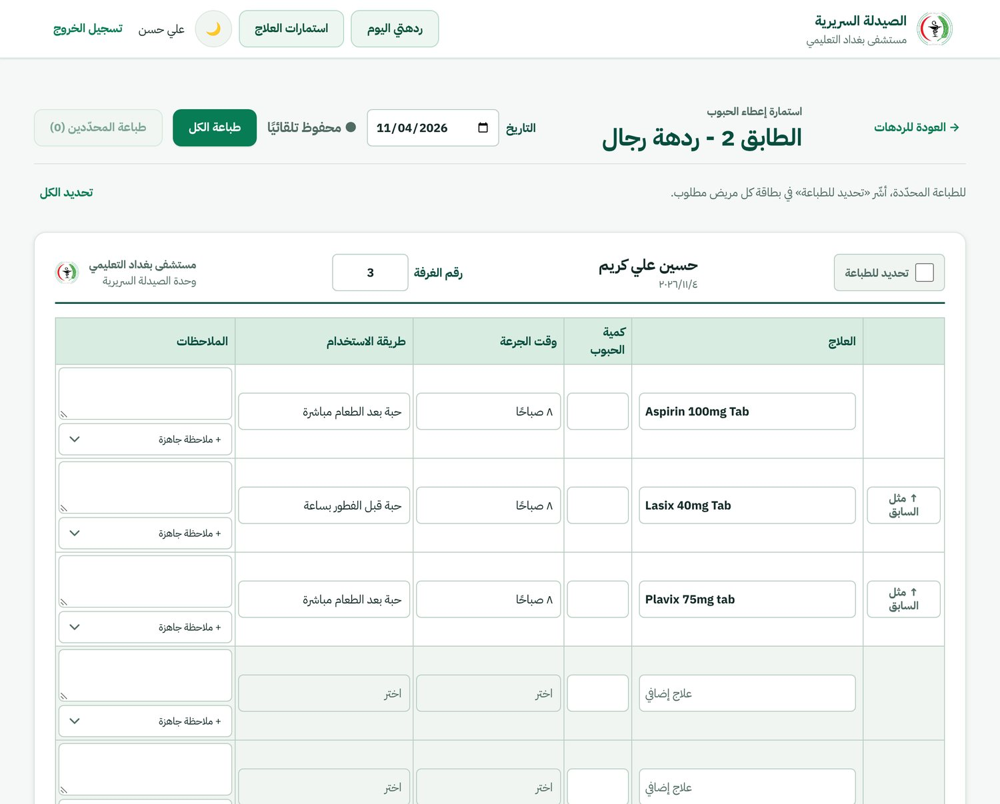
استمارة الحبوب: بطاقة لكل مريض.
ملء الاستمارة
لكل دواء اختر وقت الجرعة وطريقة الاستخدام من القوائم، واكتب الملاحظات إن لزم.
زر ↑ مثل السابق ينسخ الوقت والطريقة من الدواء الذي فوقه.
كمية الحبوب واسم الدواء أعمدة عمل تظهر على الشاشة فقط، ولا تُطبع ولا تغيّر الجارت.
يمكنك إضافة + سطر إضافي للمريض.
الطباعة
علّم تحديد للطباعة على بطاقات المرضى الذين تريدهم (أو تحديد الكل)، ثم اطبع. تُطبع كل استمارة بورقة A4، وسبعة أدوية في الصفحة.
استمارة الحبوب الإضافي: في الطوابق 3 و6 و8 و9 توجد في قائمة «…» استمارة مستقلة للحبوب الإضافية، تُملأ بالطريقة نفسها.
8الطلبية وطلبية الميرونيم
الطلبية
من قائمة «…» ← الطلبية. تجمع كمية كل دواء في الجارت الرئيسي لليوم، وتكتبها بالأرقام وبالحروف (مثل «ستة»). اضغط طباعة لطباعتها.
يوم الخميس: تتضاعف الكميات تلقائيًا ليوم الخميس، ما عدا الأدوية المعلَّمة لا يُضاعف يوم الخميس في إدارة الأدوية.
طلبية الميرونيم
من قائمة «…» ← طلبية الميرونيم. تذكر كل مريض على الميرونيم مع رقم الطبلة والجرعة (مثل 1g × 3) ويوم الكورس (D1، D5…)، والمجموع الكلي.
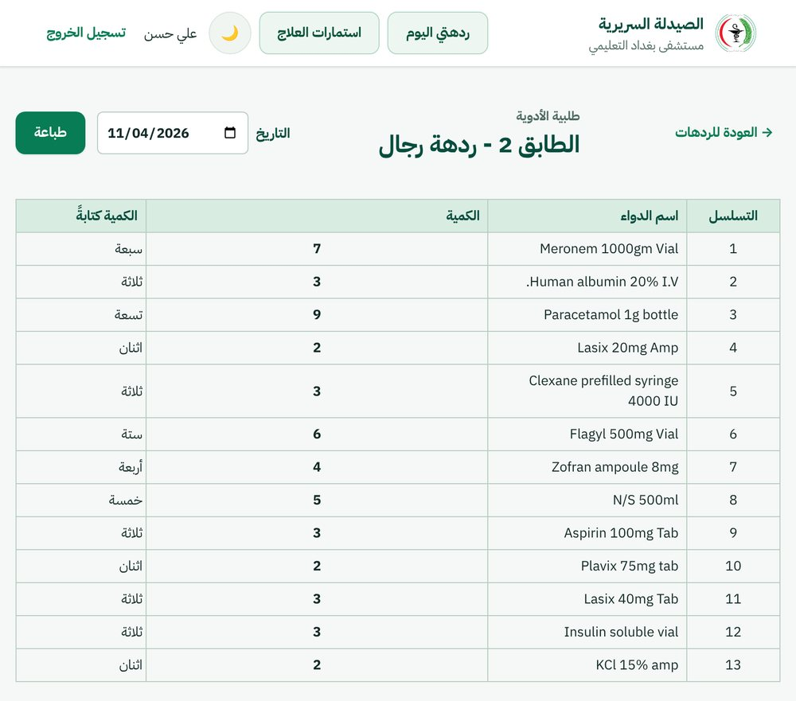
طلبية الأدوية: الكمية بالأرقام وبالحروف.
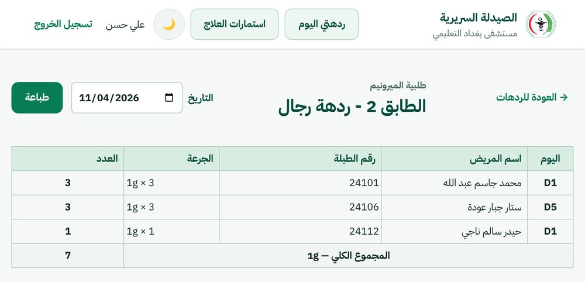
طلبية الميرونيم.
9استمارة الميرونيم واستمارة الالبومين
متى تظهر النافذة؟
تظهر نافذة الاستمارة تلقائيًا حين يُعطى المريض الدواء، سواء من إدخال مريض، أو بالكتابة في خلية الجارت (عند الخروج منها)، أو عند نقل المريض من جارت الأمس:
الميرونيم: في اليوم الأول من الكورس فقط. التطبيق يعرف يوم الكورس من الجارتات، حتى لو نُقل المريض من ردهة أخرى.
الالبومين:كل يوم يُعطى فيه.
ماذا تملأ؟
الميرونيم: العمر، الوزن، S.cr، التحسس، الجرعة (تُكتب تلقائيًا من الفيالات، مثل 2g × 3)، تحديد مدة الصرف، واسم الطبيب الاختصاص.
الالبومين: Treatment day (يُكتب تلقائيًا من يوم الكورس)، العدد المطلوب (من الكمية)، Serum albumin، Weight، S.creatinine، واسم الطبيب الاختصاص.
اسم المريض فقط إلزامي. اضغط حفظ الاستمارة، أو لاحقًا لتكملها من شاشة الاستمارة.
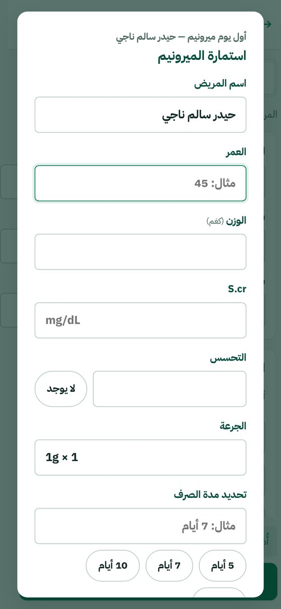
نافذة «أول يوم ميرونيم».
شاشة الاستمارة: التعديل والتأشير والطباعة
من قائمة «…» ← استمارة الميرونيم أو استمارة الالبومين. تظهر استمارات اليوم مرسومة مثل الورقة الرسمية تمامًا.
تعديل أي قيمة: اضغطها في مكانها على الاستمارة واكتب. تُحفظ عند الخروج من المربع. ويُكتب اسم الطبيب الاختصاص فوق توقيعه.
التأشير: اضغط مربع التشخيص (الميرونيم) أو الاستطباب (الالبومين) أو الزرع. يُحفظ فورًا. اختيار Others (specify) يفتح مربعًا تكتب فيه السبب.
رقم الطبلة: يُؤخذ من صف المريض في جارت اليوم إذا لم يُكتب في الاستمارة.
+ استمارة جديدة لإضافة استمارة يدويًا، وحذف لحذف استمارة.
طباعة لاستمارة واحدة، أو زر الطباعة العلوي لكل استمارات اليوم. كل استمارة بورقة A4 واحدة.
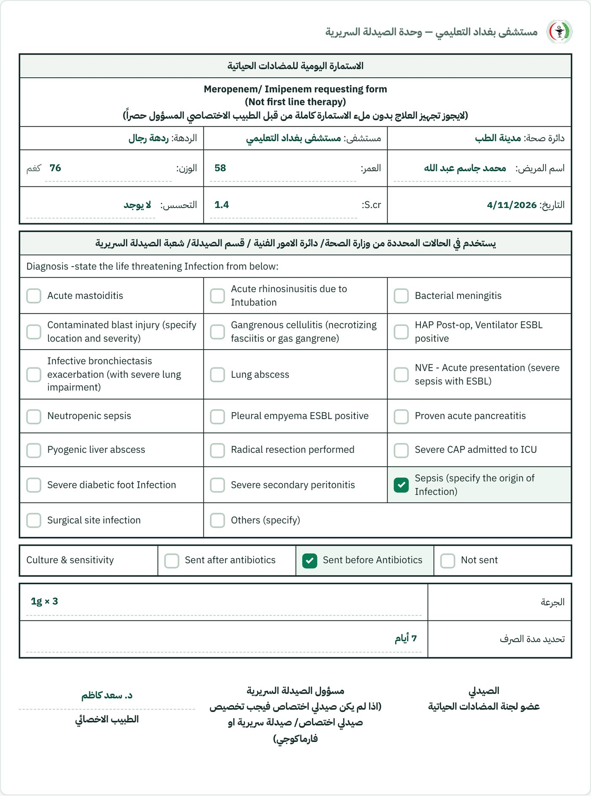
استمارة الميرونيم كما تظهر للتعديل: القيم في أماكنها، والتشخيص يُؤشَّر بالضغط.
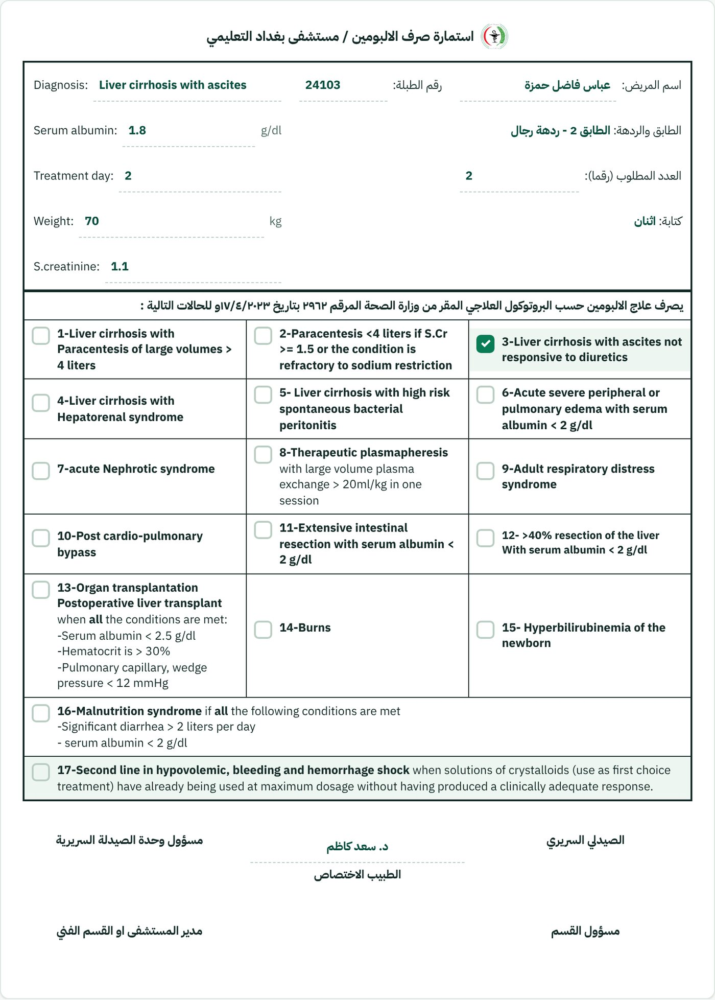
استمارة الالبومين: بيانات المريض، ثم الاستطبابات المرقّمة حسب البروتوكول.
10المتابعة السريرية
شاشات للقراءة تُبنى من الجارتات تلقائيًا، فلا تحتاج إلى أي إدخال إضافي.
متابعة الميروبينيم
كل مريض ما زال على الميرونيم في الردهة: جرعته، وعمود لكل يوم من الشهر فيه رقم يوم الكورس (D1، D2 …). المريض الذي انتهى كورسه لا يظهر.
يوم الجمعة بلا جارت لا يقطع العدّ.
يوم واحد فائت يُغتفر ويُعلَّم ؟. ويومان فأكثر يعنيان كورسًا جديدًا يبدأ من D1.
نقل المريض إلى ردهة أخرى (برقم الطبلة نفسه) يحمل العدّ معه.
تُطبع بورقة A4 أفقية واحدة.
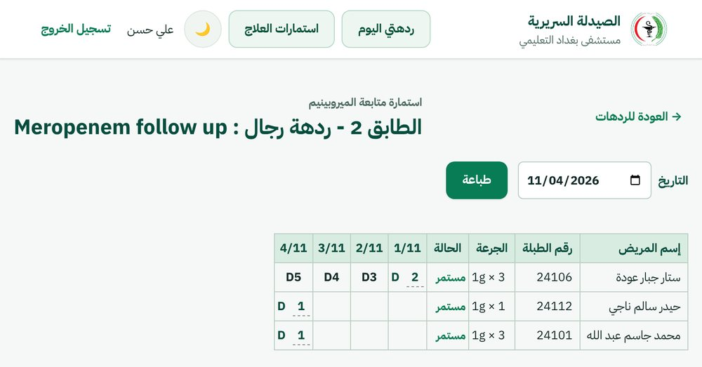
متابعة الميروبينيم.
متابعة الاستلام
لتسجيل من استلم جرعته عند المرور بالأدوية، ومن لم يستلمها (مثلًا مريض ذهب إلى الأشعة أو المختبر).
اضغط استلم أو لم يستلم بجانب كل مريض. المريض بلا علامة يبقى لم يُحدَّد.
الأزرار في الأعلى تصفّي القائمة وتعدّ كل حالة. قائمة لم يستلم هي التي تعود إليها لاحقًا.
العلامة مرتبطة باسم المريض ورقم طبلته، فلا تنتقل إلى مريض آخر إذا تغيّر الصف.
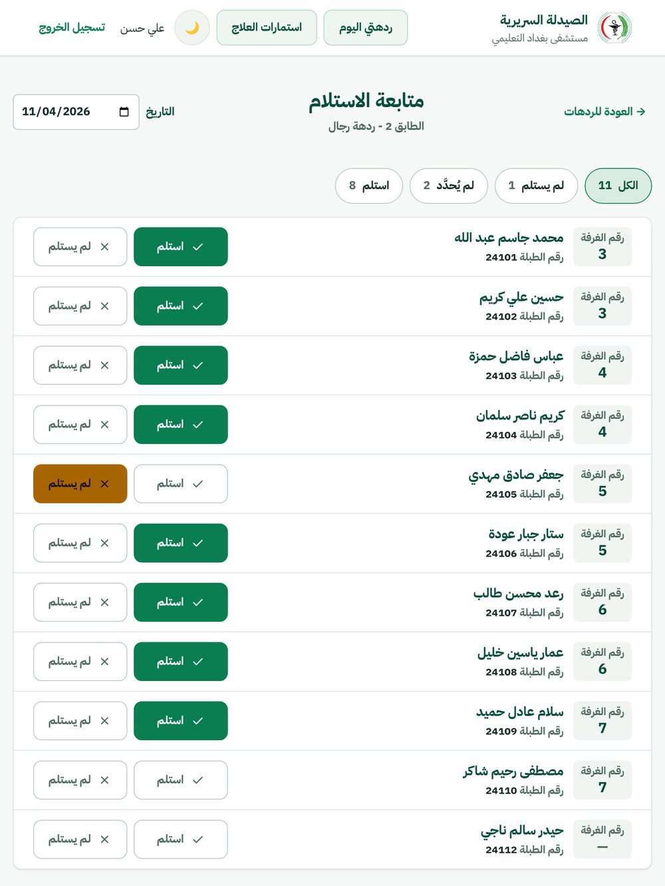
متابعة الاستلام.
التداخلات الدوائية
تفحص أدوية كل مريض في جارت اليوم، وتذكر كل تداخل مع درجة خطورته (Major / Moderate) وملاحظة عنه. للمراجعة فقط، ولا تُغني عن مراجعة المرجع الدوائي.
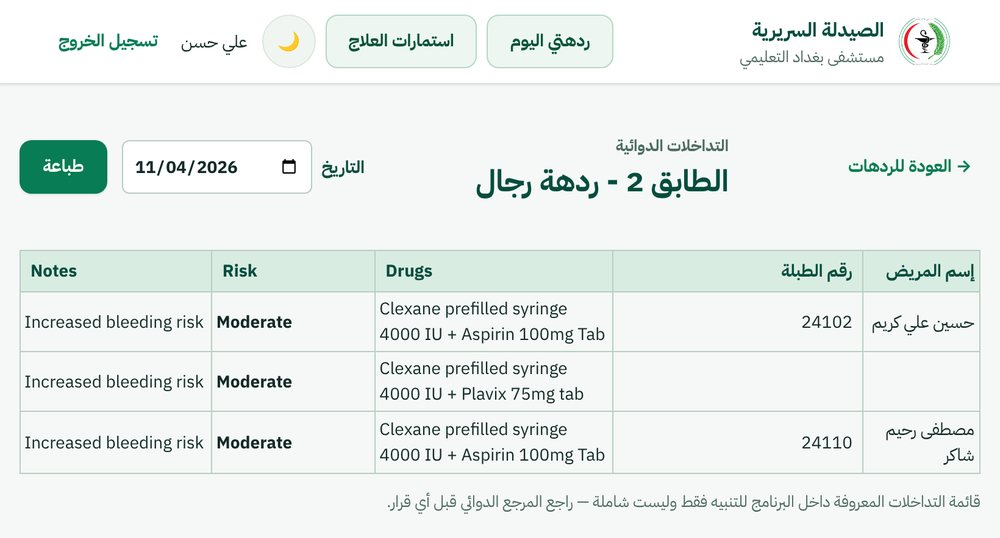
التداخلات الدوائية لردهة رجال.
تعديل الجرعة الكلوية
حاسبة لوظيفة الكلى: اكتب العمر والوزن والطول والجنس والكرياتينين (mg/dL أو µmol/L)، فتظهر نتائج كل المعادلات (Cockcroft-Gault، CKD-EPI، MDRD وغيرها) جنبًا إلى جنب. لا يُحفظ شيء مما تكتبه هنا.
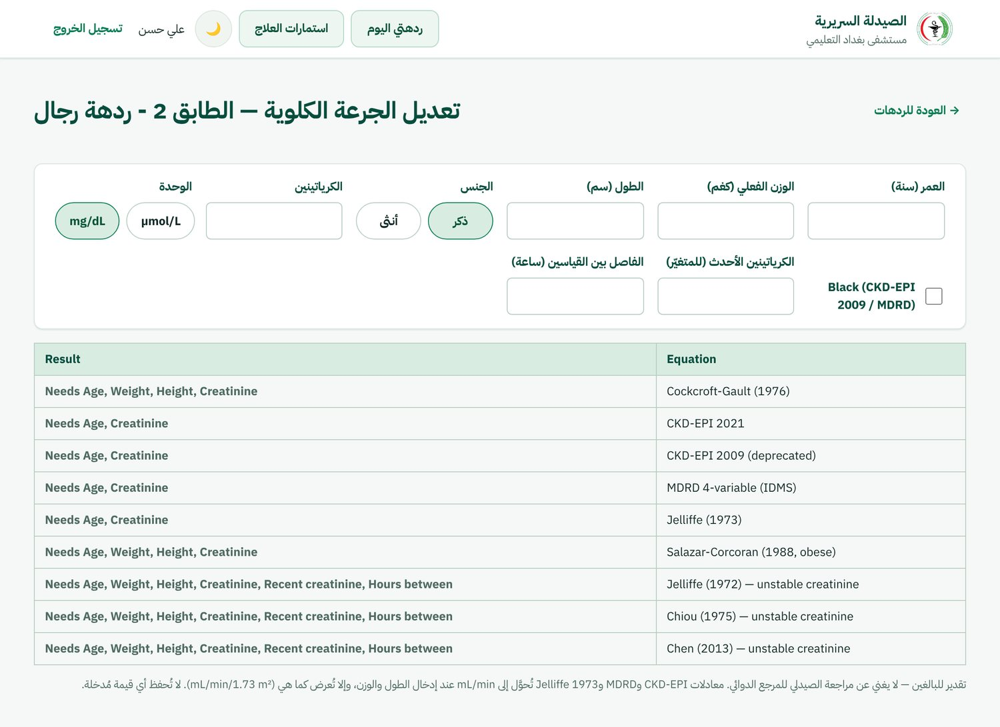
تعديل الجرعة الكلوية.
11العمل دون اتصال
الشبكة في الردهات تنقطع أحيانًا. صُمّم التطبيق ليستمر العمل:
يفتح التطبيق دون اتصال باسم آخر مستخدم دخل على الجهاز.
الجارت واستمارة الحبوب واستمارة الحبوب الإضافي تعمل كالمعتاد. ما تكتبه يُحفظ على الجهاز، ويُرسل وحده حين يعود الاتصال.
يظهر في الشريط العلوي ○ غير متصل — سيُرفع تلقائيًا، أو عدد التعديلات بانتظار الرفع.
الجارت الذي لم يُفتح على هذا الجهاز من قبل يُفتح فارغًا دون اتصال. وعند عودة الاتصال يُضاف مرضاه إلى جارت الخادم، ولا يمسح ما كتبه غيرك.
استمارات الميرونيم والالبومين تُحفظ على الجهاز وتُرسل لاحقًا.
تحتاج إلى اتصال: الطلبية، متابعة الميروبينيم، متابعة الاستلام، القوالب، البحث، التقارير، ولوحة التحكم.
مهم: لا تسجّل الخروج وفي الجهاز تعديلات لم تُرفع بعد. انتظر حتى يختفي عدّاد «بانتظار الرفع».
عمل غير مكتمل: إذا أُغلق التطبيق قبل وصول الحفظ، تظهر في الصفحة الرئيسية بطاقة لاستئناف الجارت. افتحها ليُدمج ما كتبته ويُحفظ.
12للمسؤولين والمدراء: المتابعة والتقارير
صفحة الطوابق
يرى المسؤول كل الطوابق والردهة المستقلة. على كل طابق عدد الردهات التي بدأت اليوم وحالته: لم تبدأ أو جزئي أو بدأت، ثم اكتملت.
البحث هنا على مستوى الوحدة كلها، مع الاختيار بين هذا اليوم وكل التواريخ.
إعلانات الإدارة: في أسفل الصفحة اكتب الإعلان واضغط نشر. يظهر لكل الصيادلة ويصلهم إشعار. ويمكن تعديل أي إعلان أو حذفه.
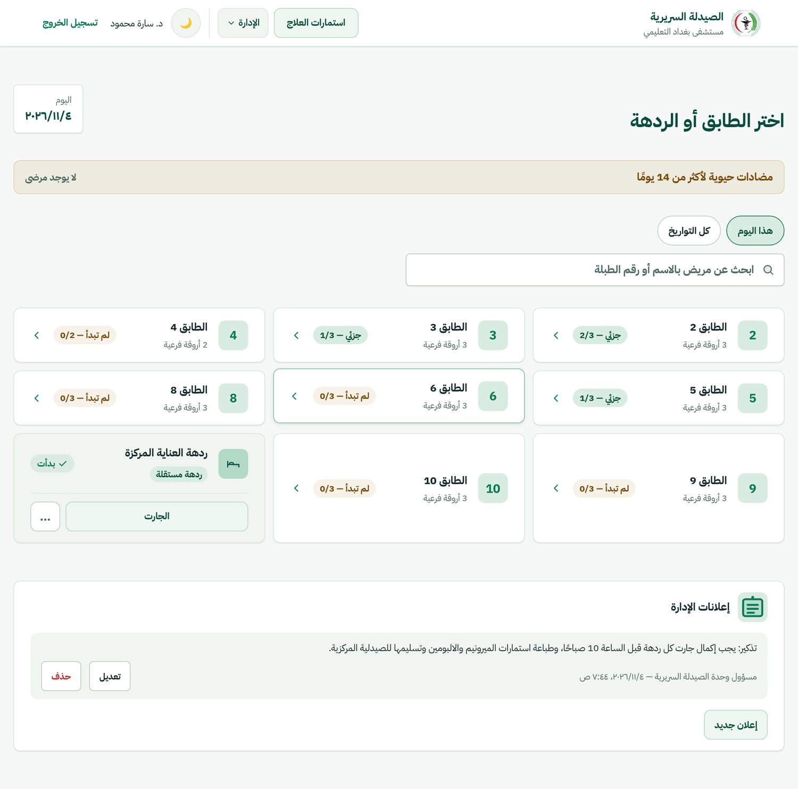
صفحة الطوابق للمسؤول.
لوحة التحكم
من قائمة الإدارة ← لوحة التحكم: حالة الجارت الآن لكل ردهة (أيّها لم يبدأ بعد)، وأعداد الأدوية والمستخدمين وطلبات الانضمام والاستمارات، مع إحصاءات الاستهلاك.
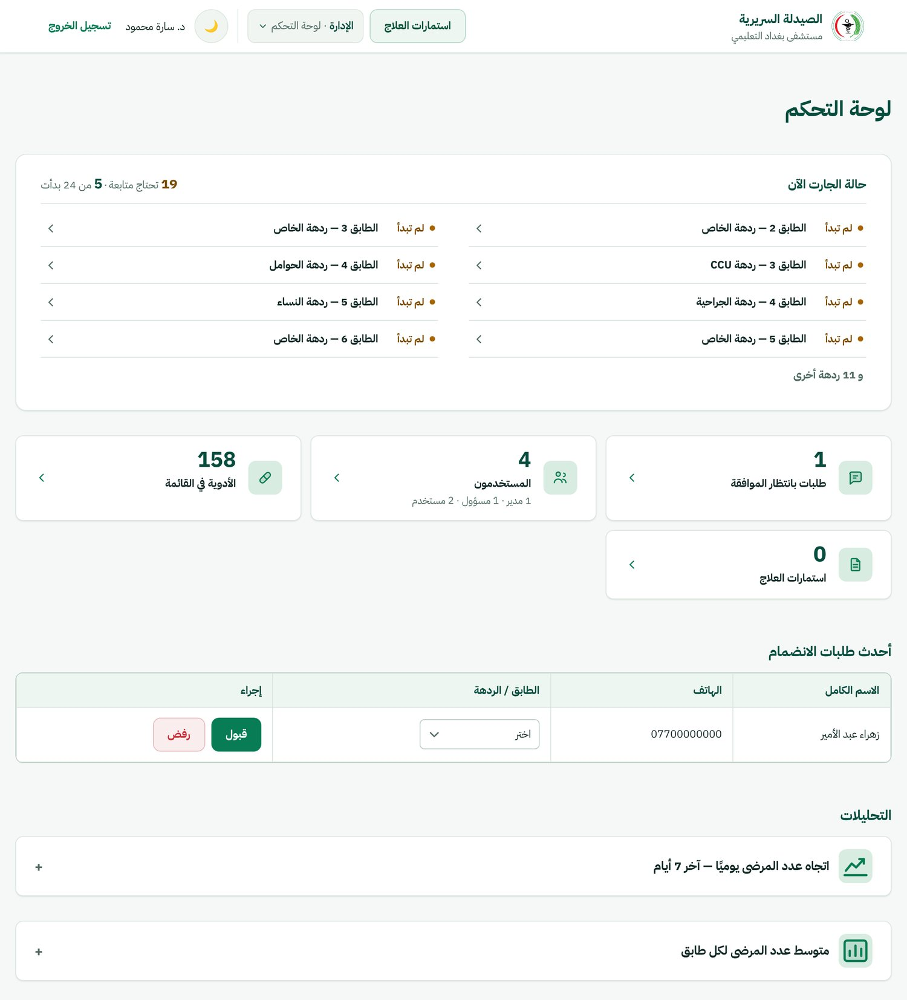
لوحة التحكم.
التقارير
افتح التقارير من قائمة الإدارة، أو من الشريط السفلي على الهاتف.
اختر الطوابق والردهات (أو الكل).
في أقسام التقرير علّم الأقسام التي تريدها فقط، أو اتركها كلها.
حدّد من تاريخ وإلى تاريخ (حتى 120 يومًا)، واضغط عرض التقرير.
للطباعة: طباعة / PDF يطبع كل الأقسام المختارة، وزر طباعة بجانب أي قسم يطبعه وحده. يُصنع ملف PDF بورق A4.
أقسام التقرير: الأرقام الرئيسية، الإقامة الطويلة، مدة البقاء، المرضى العائدون، اتجاه استهلاك دواء، استهلاك الأدوية، استهلاك المضادات (DDD)، كورسات المضادات الطويلة، مضاد بكتيري أكثر من 14 يومًا، أكثر من مضاد في اليوم، مدة كورسات المضادات، إعادة المضاد نفسه، المضادات حسب الطابق، المضادات حسب الردهة، ومضادات Reserve.
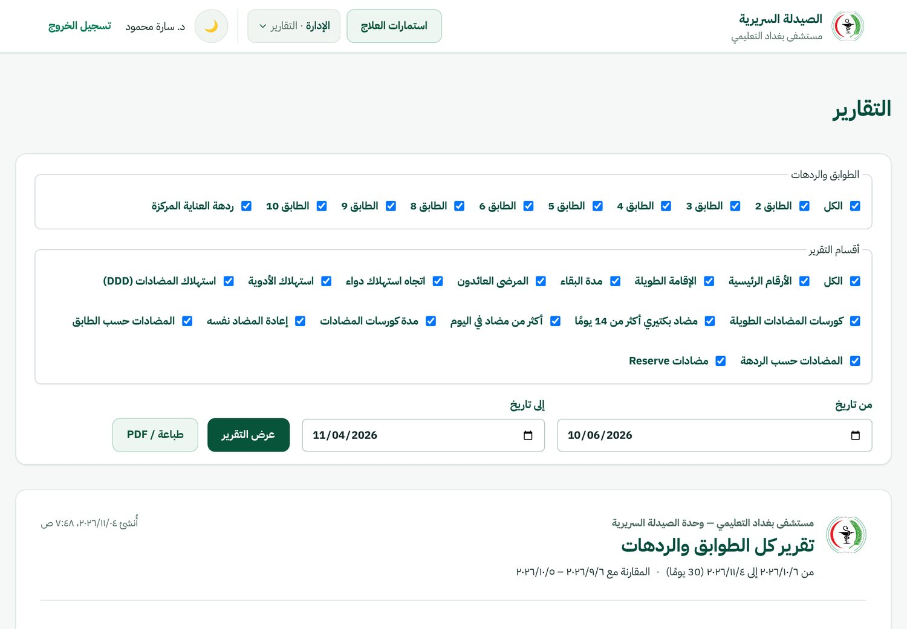
شاشة التقارير: اختيار الطوابق والأقسام والمدة.
استمارات العلاج
في استمارات العلاج يرفع المسؤول ملفات الاستمارات والبروتوكولات، ويغيّر أسماءها ويستبدلها ويحذفها، ويقرأها كل الصيادلة وينزّلونها.
13إدارة النظام
كل هذه الشاشات في قائمة الإدارة في الشريط العلوي.
طلبات الانضمام
كل حساب جديد ينتظر هنا. اختر الطابق أو الردهة للصيدلي، ثم اضغط قبول، أو اضغط رفض. (للمدير فقط.)
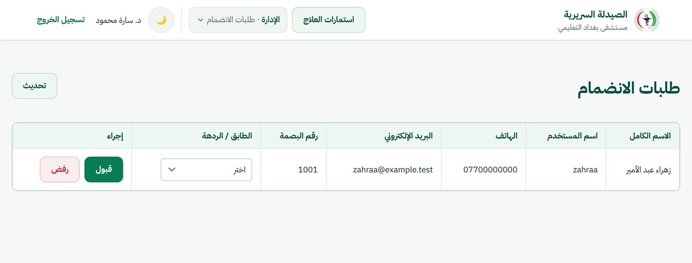
طلبات الانضمام.
جميع المستخدمين
قائمة الحسابات: الدور (مستخدم / مسؤول / مدير)، والطابق أو الردهة، والحالة. غيّر الدور أو الطابق من القوائم في الصف، فيطلب التطبيق تأكيدًا قبل النقل. وحذف يحذف الحساب.
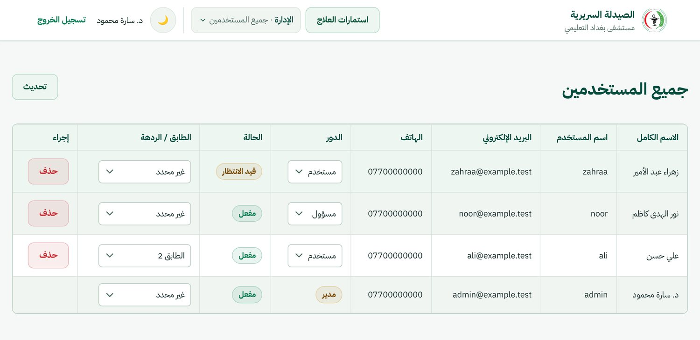
جميع المستخدمين.
إدارة الأدوية
قائمة أدوية الوحدة، وهي الوحيدة التي يُقبل منها اسم دواء في الجارت.
إضافة دواء: اكتب الاسم الإنجليزي كما يُكتب على الجارت، مع التركيز والشكل (مثل Meronem 1000gm Vial)، ثم إضافة.
لكل دواء اسم عربي، وعلامتان: مستلزم (لا يُحسب ضمن عدد الأدوية للمريض في التقارير)، ولا يُضاعف يوم الخميس (يُطلب بالكمية العادية يوم الخميس).
حذف دواء لا يمسحه من الجارتات القديمة.
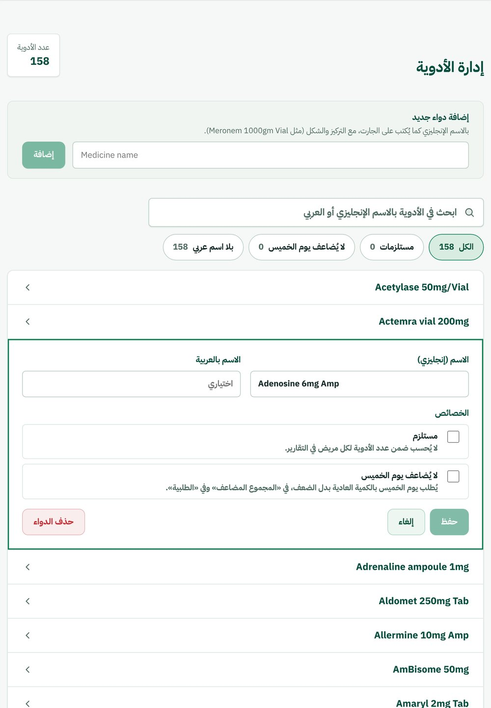
إدارة الأدوية.
إدارة الطوابق
أداة لمسح الجارتات واستمارات الحبوب القديمة لطوابق محددة وفترة محددة. الحذف نهائي، ويطلب التطبيق تأكيدًا قبله.
انتبه: تأكد من أخذ نسخة احتياطية أو طباعة التقارير المطلوبة قبل المسح.
استخدام المستخدمين، سجل الإدارة، الأخطاء
استخدام المستخدمين: نشاط كل مستخدم (أيام النشاط، الطلبات، آخر دخول) وحجم البيانات المنقولة.
سجل الإدارة (للمدير): كل إجراء إداري، مثل قبول الطلبات وتغيير الأدوار وتعديل الأدوية وحذف البيانات، مع من قام به ومتى.
الأخطاء (للمدير): الأخطاء التقنية التي حدثت في التطبيق، لمتابعتها مع المطوّر.
14حسابي والإعدادات
الملف الشخصي
اضغط اسمك في الشريط العلوي، أو حسابي على الهاتف. يمكنك تعديل الاسم الكامل والبريد الإلكتروني ورقم الهاتف، ثم حفظ التغييرات.
الإشعارات
في الملف الشخصي اضغط تفعيل الإشعارات على هذا الجهاز. يصل الصيدلي تنبيه عند نشر إعلان جديد. ويصل المسؤول أيضًا تنبيه عند طلب انضمام جديد وعند بدء جارت.
على الآيفون والآيباد: أضف التطبيق إلى الشاشة الرئيسية أولًا (الفصل 2)، ويلزم iOS أو iPadOS 16.4 أو أحدث. وإذا ظهر أن الإشعارات محظورة، ففعّلها من إعدادات الجهاز.
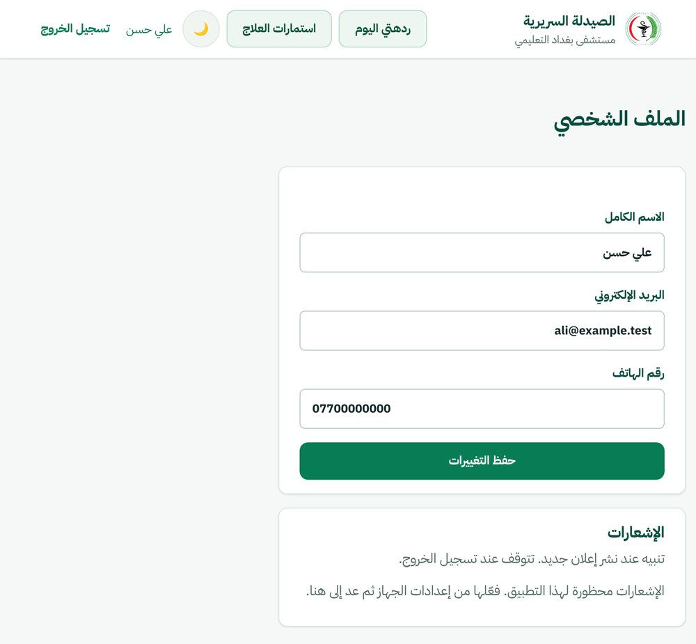
الملف الشخصي.
الوضع الليلي
زر 🌙 في الشريط العلوي يحوّل الشاشة إلى ألوان داكنة، وهو أريح في الإضاءة الخافتة. لا يؤثر على الطباعة: الجارت والاستمارات تُطبع دائمًا بالأسود على الأبيض.
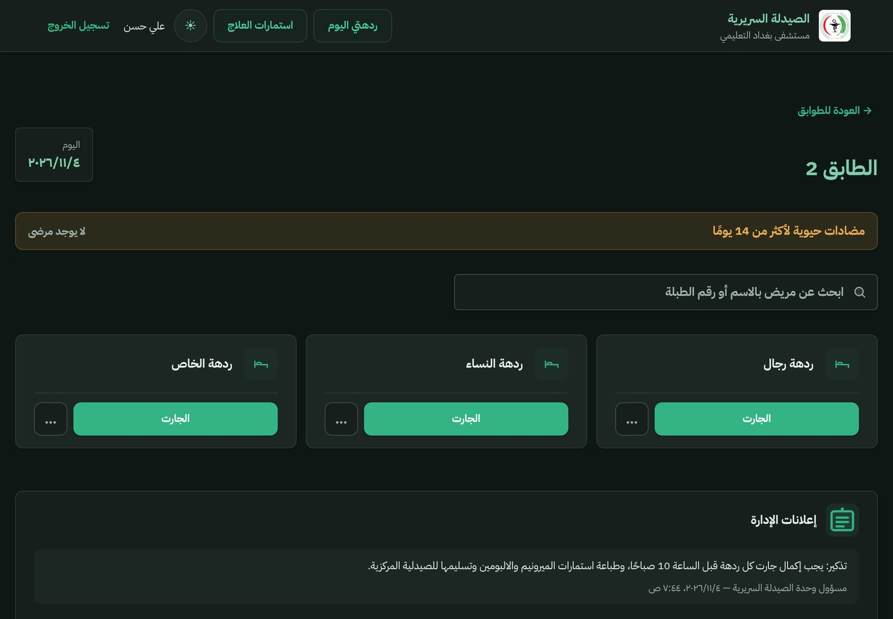
الوضع الليلي.
15أسئلة شائعة وحلول سريعة
أُبلغت بميزة جديدة لكنها لا تظهر عندي.
يحتاج النشر بضع دقائق. بعدها أغلق التطبيق تمامًا وافتحه من جديد، وإن لزم حدّث الصفحة.
الجارت مفتوح للقراءة فقط ولا أستطيع الكتابة.
زميل آخر يعدّل الجارت الآن على جهاز آخر، ويظهر اسمه أعلى الجارت. تظهر تعديلاته أمامك مباشرة، ويُفتح لك التعديل حين ينتهي.
لا أستطيع الكتابة في جارت الأمس.
هذا مقصود: لا يُعدَّل إلا جارت اليوم، والأيام الأخرى للعرض والطباعة فقط. إذا وجدت خطأ في يوم سابق، اطلب من المسؤول أو المدير تصحيحه.
كتبت اسم دواء ولم يُقبل.
الجارت يقبل أسماء قائمة الأدوية فقط. اختر من الاقتراحات أو من «هل تقصد…؟». وإذا لم يكن الدواء موجودًا، اطلب من المسؤول إضافته في «إدارة الأدوية».
حذفت مريضًا أو قيمة بالخطأ.
افتح «سجل التعديلات» لترى القيمة السابقة، ثم أعد كتابتها.
ظهرت رسالة «اختفت بيانات الجارت فجأة».
هذه حماية: لم يُحفظ الجارت فارغًا، وأُعيدت آخر نسخة محفوظة. راجِع الجارت وأكمل عملك.
حالة الحفظ لا تتحول إلى «محفوظ».
غالبًا ضعف في الشبكة. التطبيق يعيد المحاولة وحده، ويمكنك الضغط على «إعادة المحاولة الآن». ما كتبته محفوظ على الجهاز ولن يضيع.
لم تظهر نافذة استمارة الميرونيم.
تظهر في أول يوم من الكورس فقط، ومرة واحدة لكل مريض في اليوم على الجهاز. يمكنك دائمًا إضافتها يدويًا من شاشة «استمارة الميرونيم» ← «+ استمارة جديدة».
اثنان منا يعملان بالحساب نفسه.
يعمل ذلك، لكن تعديلات الجهازين تُدمج في الجارت نفسه، ولا يظهر من كتب ماذا. الأفضل حساب لكل صيدلي: أنشئ حسابًا جديدًا واطلب من المدير قبوله.